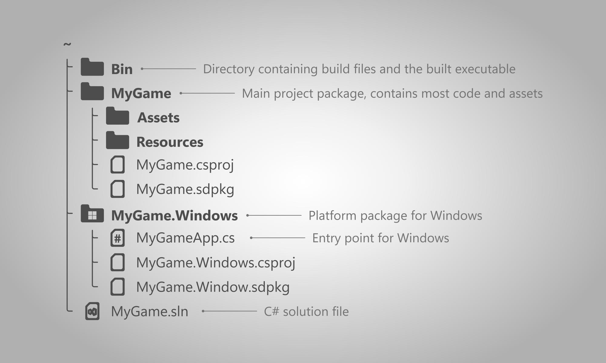
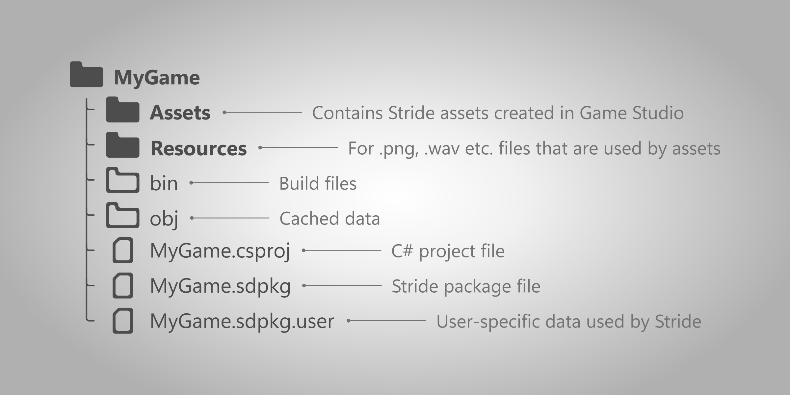

Project file structure
Intermediate
This page explains in detail how a Stride project's files are structured.
Overview
A Stride project is a standard C# solution, consisting of a single solution file (.sln) and multiple project package folders, which contain code, assets and resources.

- Bin - folder containing build files. For more information visit this section.
- NameOfGame, NameOfGame.PlatformName - package folders.
.slnfile - the solution file used by C# and Game Studio for opening the project.
Project packages
At the root, a Stride project is comprised of multiple project packages. They are used for separating code, assets and resources.
For .NET developers: a Stride project package is a standard C# project.
By default, there are at least 2 project packages in a Stride project:
- NameOfGame - contains most code, assets and resources for the game.
- NameOfGame.PlatformName (e.g. NameOfGame.Windows) - dedicated package for a given platform, contains the entry point and other files specific to the platform (such as the window icon).
A project package may contain:
- Assets - the assets folder. Name of this folder or additional folders can be configured in the
.sdpkgfile. - Resources - the resources folder. Name of this folder or additional folders can be configured in the
.sdpkgfile. .sdpkgfile - contains configurable metadata of the package..sdpkg.userfile - contains user-specific data about the editor that is not meant to be shared with source control..csprojfile - a C# project file containing information about how it's code will be compiled.

Package bin and obj folders
Every project package has bin and obj folders which are automatically created when opening or running the project. They store cached data used by Stride.
Note
These folders can be safely deleted without affecting the rest of the project. For more information, visit the cached files page.
Project Bin folder
In the root of the project directory, there is a Bin folder that contains game builds for each platform. Every time the game is launched from Game Studio or from an IDE, a debug version is built and placed in that folder.
The location of this folder can be changed by going to the .csproj file of a platform's package and changing the value of <OutputPath>. For more information, read the building setup page.
Note
To build the release version of the game, visit the building the game section.